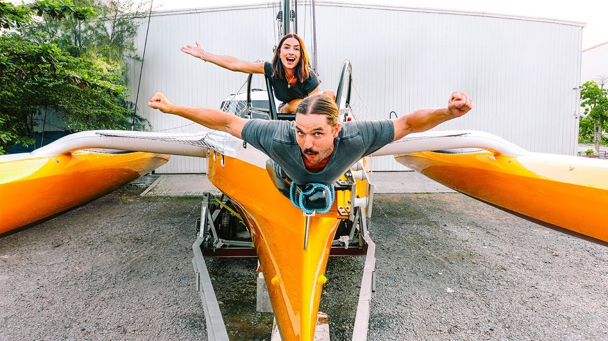
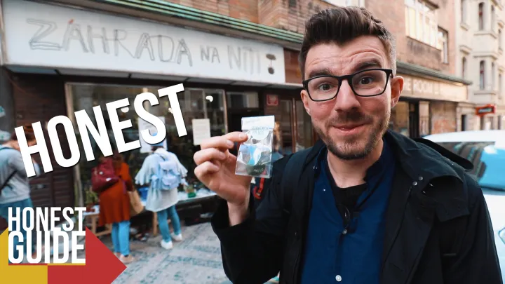

Aventurieri și oameni care fac diferența
Oamenii de mai jos nu sunt doar „influenceri de travel”. Ei arată că turismul poate însemna mult mai mult decât poze la obiective turistice aglomerate. Prin felul în care călătoresc și povestesc, scot la lumină comunități mai puțin vizibile, ritualuri, mări, orașe și moduri de viață care altfel ar rămâne în umbră.
De la viața pe un velier, până la explorarea cartierelor mai puțin turistice sau a satelor din zone îndepărtate, acești aventurieri transformă fiecare drum într-o ocazie de a învăța ceva nou și de a construi o relație mai sinceră cu locurile vizitate.
HaiHui în doi
Un cuplu de români care explorează lumea cu rucsacul în spate, de la sate izolate până la orașe pline de culoare. Videourile lor surprind nu doar destinațiile, ci mai ales oamenii pe care îi întâlnesc, mâncarea locală și momentele autentice trăite departe de traseele ultra-turistice.
Sailing La Vagabonde
O familie care trăiește pe un velier și străbate oceanele în propriul ritm. Ei arată ce înseamnă un stil de viață nomad pe mare, cu respect pentru natură, pentru condițiile vremii și pentru comunitățile insulare pe care le vizitează. Fiecare insulă devine un mic univers de descoperit, nu doar o oprire rapidă.
Honest Guide
Un ghid sincer despre orașe europene, în special Praga. Canalul explică unde să mănânci bine fără să fii păcălit, ce zone merită vizitate în afara centrelor supraaglomerate și ce capcane turistice e mai bine să eviți. Un exemplu excelent de turism urban responsabil, cu respect pentru localnici.